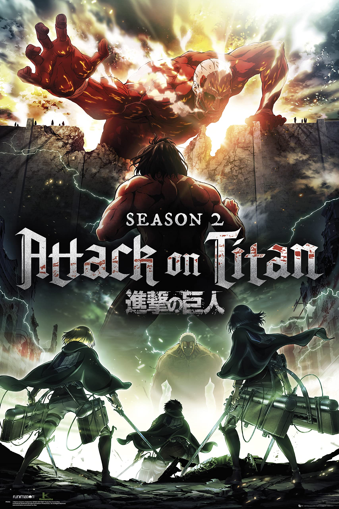
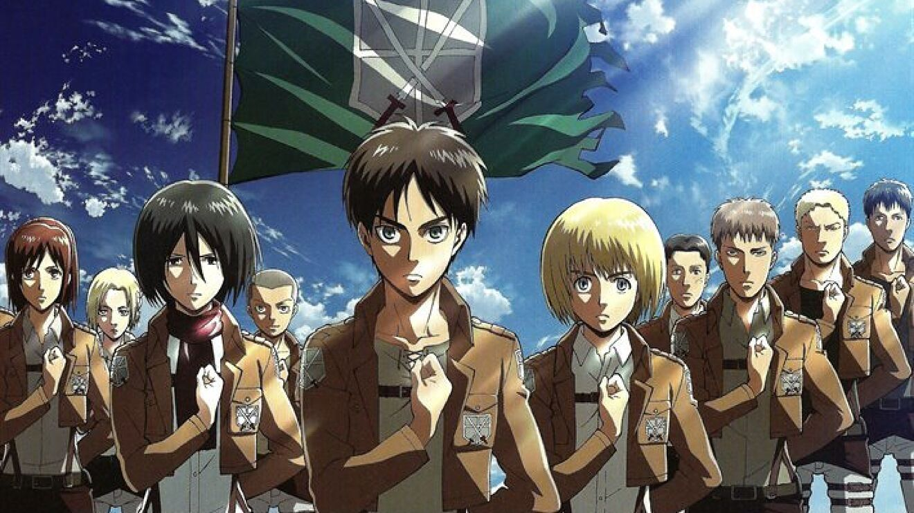

Segunda temporada (2017)

Informacion de la segunda temporada
La segunda temporada de la serie de televisión de anime Attack on Titan fue producida por Wit Studio de IG Port y dirigida por Tetsurō Araki y Masashi Koizuka. Esta temporada cubre el arco narrativo «Enfrentamiento de titanes» (capítulos 35-50) del manga original de Hajime Isayama. Se transmitió en MBS TV del 1 de abril al 17 de junio de 2017, y luego se transmitió en Tokyo MX, FBS, TOS, HTB, TV Aichi y BS11.Funimation y Crunchyroll transmitieron la temporada dos en sus respectivos sitios web, mientras que Adult Swim transmitió la versión doblada en inglés de Funimation.El 25 de abril de 2018, Selecta Visión lanzó en España la temporada el formatos caseros, incluyendo su doblaje. El 30 de diciembre de 2020, Funimation estrenó el doblaje latino en México.
La temporada dos sigue a Eren Jaeger y a sus amigos de la Tropa de Entrenamiento 104° que recién han comenzado a convertirse en miembros de pleno derecho del Escuadrón de Encuestas. Después de luchar contra la Titán Femenina, Eren no encuentra tiempo para descansar mientras una horda de Titanes se acerca a la Muralla Rose y la batalla por la humanidad continúa. Mientras que la Legión de Exploración corre para salvar la muralla, descubren más sobre los Titanes invasores y los oscuros secretos de sus propios miembros.

Las piezas musicales del anime están compuesta por Hiroyuki Sawano. El tema de apertura es «Opfert eure Herzen!» (心臓を捧げよ！ Shinzō wo Sasageyo!?, lit. !Entreguen sus Corazones!) de Linked Horizon, y el tema final es «Yūgure no Tori» (夕暮れの鳥? lit. Aves del Mañana) de Shinsei Kamattechan.
| Numero de episodio |
Titulo |
Fecha de emision |
| 26 |
«El Titán Bestia» |
1 de abril de 2017 |
| 27 |
«He vuelto» |
8 de abril de 2017 |
| 28 |
«Hacia el suroeste» |
15 de abril de 2017 |
| 29 |
«Soldado» |
22 de abril de 2017 |
| 30 |
«Historia» |
29 de abril de 2017 |
| 31 |
«Guerrero» |
6 de mayo de 2017 |
| 32 |
«Cuerpo a cuerpo» |
13 de mayo de 2017 |
| 33 |
«Los cazadores» |
20 de mayo de 2017 |
| 34 |
«Abertura» |
27 de mayo de 2017 |
| 35 |
«Niños» |
3 de junio de 2017 |
| 36 |
«Carga» |
10 de junio de 2017 |
| 37 |
«Grito» |
17 de junio de 2017 |